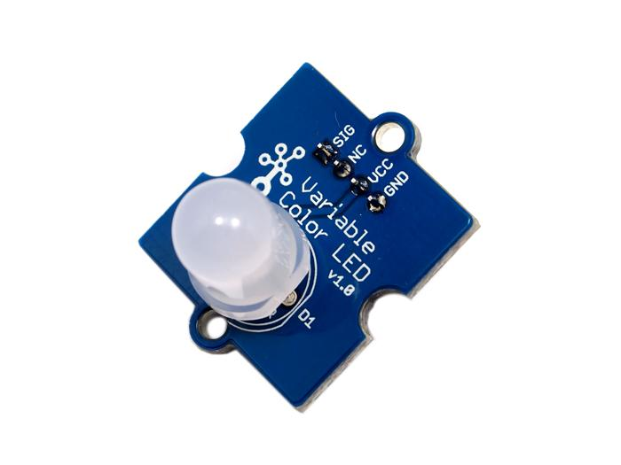
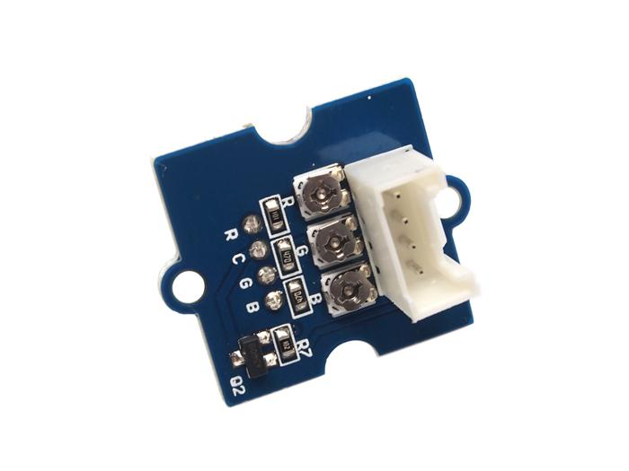
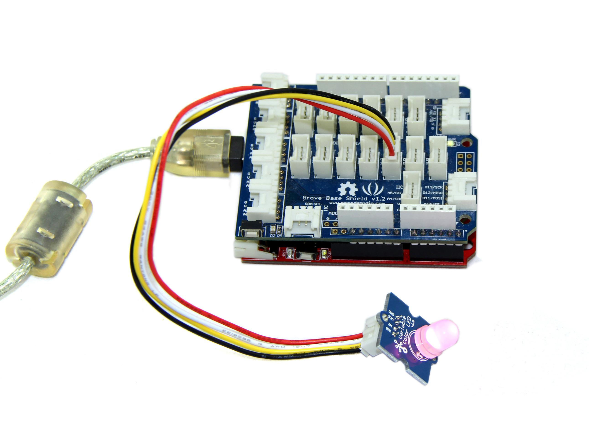

This Grove consists of one 8mm RGB LED. It operates at 5V DC. When SIG pin is logic HIGH, the RGB LED will light up. Perfect for use on Seeeduino digital outputs, or also can be controlled by pulse-width modulation. And it uses three adjustable resistor to change the color of the RGB LED.
Model: COM53120P
 
Be gentle when adjusting the R, G and B adjustable resistances in case of over-turning.
| Item | Typical | Unit |
|---|---|---|
| Operate Voltage | 5.0 | VDC |
| Working Current | 20 | mA |
| Variable Resistor | <1 | KΩ |
The three resistances RED, GREEN and BLUE of the module control the R, G and B channels respectively. By adjusting the three adjustable resistances, it can turn out variable color. The thing to notice, however, is that be gentle when turning the adjustable resistances.
The following sketch demonstrates a simple application of controlling its brightness. As the picture on the below indicates, the Variable Color LED is connected to digital port 9 of the Grove - Basic Shield. The hardware installation is gave as follow:

Demo code like:
int ledPin = 9; // LED connected to digital pin 9
void setup() {
// nothing happens in setup
}
void loop() {
// fade in from min to max in increments of 5 points:
for(int fadeValue = 0 ; fadeValue <= 255; fadeValue +=5) {
// sets the value (range from 0 to 255):
analogWrite(ledPin, fadeValue);
// wait for 30 milliseconds to see the dimming effect
delay(30);
}
// fade out from max to min in increments of 5 points:
for(int fadeValue = 255 ; fadeValue >= 0; fadeValue -=5) {
// sets the value (range from 0 to 255):
analogWrite(ledPin, fadeValue);
// wait for 30 milliseconds to see the dimming effect
delay(30);
}
}
| Revision | Descriptions | Release |
|---|---|---|
| v0.9b | Initial public release | date |
If you have questions or other better design ideas, you can go to our forum or wish to discuss.
Copyright (c) 2008-2016 Seeed Development Limited (www.seeedstudio.com / www.seeed.cc)